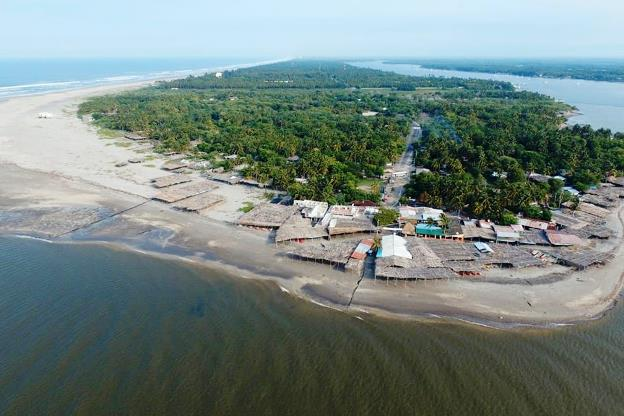
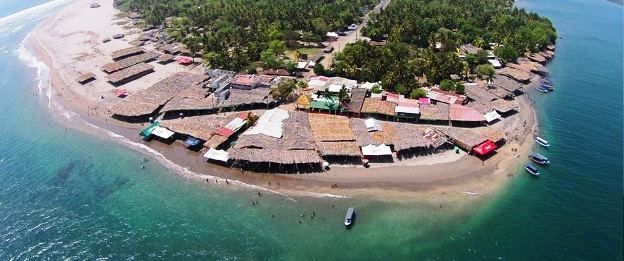
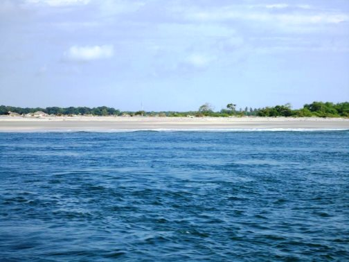
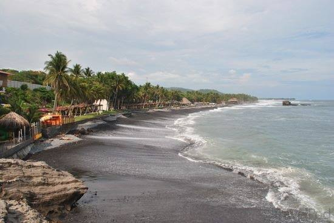
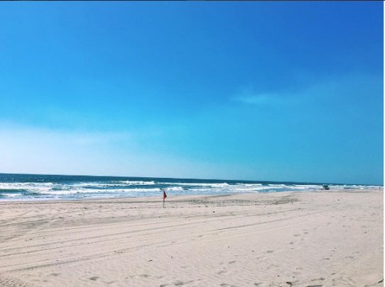
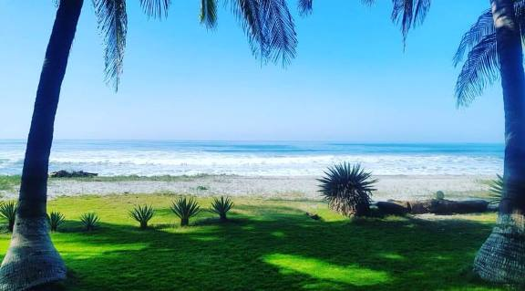
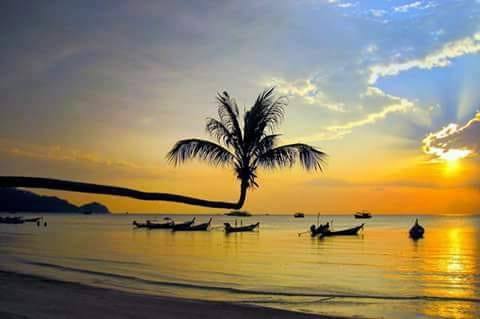
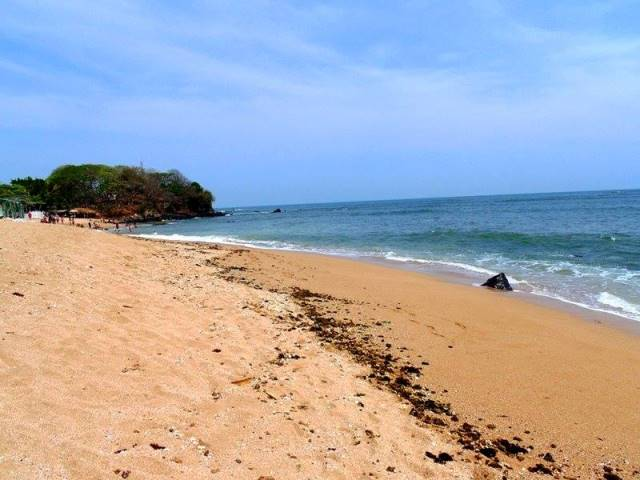
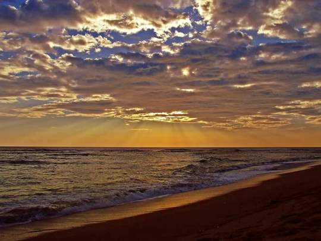
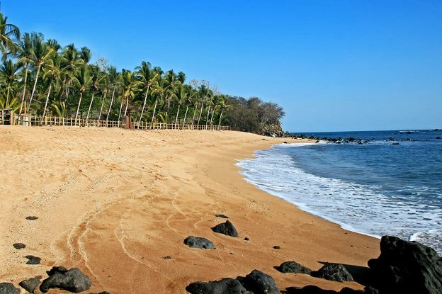

Playas de El Salvador
El Salvador es un pequeño paraíso tropical de 321 kilómetros de costas en el Océano Pacífico, en los cuales se ubican casi un centenar de playas, algunas de ellas muy conocidas por turistas nacionales y extranjeros.
Por tradición El Salvadores uno de los destinos turísticos preferidos en Centro América para vacacionar ya que sus playas suelen adaptarse a cualquier necesidad turística, como por ejemplo practicar surf, bañarse, nadar, tomar el sol, realizar escapadas románticas o simplemente contemplar los bellos paisajes.
Los departamentos de El Salvador que cuentan con acceso al Pacífico son, en la zona occidental del país, los departamentos de Ahuachapán y Sonsonate; en la zona central del país están La Libertad y La Paz, y en la zona oriental encontramos San Miguel, Usulután y La Unión.
En realidad al ser el país pequeño tiene s la ventaja de poder desplazarte de cualquier parte del territorio a una playa, en cuestión de minutos o unas pocas horas.
En cuanto a los costos de acceso a las playas, en la mayoría es gratuito el ingreso y en otras es bastante módico. Además existen numerosos hoteles, restaurantes y ranchos que ofrecen a los turistas deliciosa comida típica nacional e internacional, así como alojamiento para quienes quieran disfrutar de una estadía de más de un día.
Por lo general la afluencia de turistas a las playas salvadoreñas es frecuente en todo el año, especialmente los fines de semana, en la temporada de Semana Santa y en las vacaciones agostinas (del 1 al 6 de agosto, en el marco de las fiestas patronales de San Salvador).
A parte de lo anterior, El Salvador también cuenta con otras opciones interesantes en su zona costera, entre las cuales se pueden encontrar islas, barras, manglares, esteros, bahías, bocanas y el Golfo de Fonseca.
Es interesante también conocer que se puede cruzar toda la costa salvadoreña en unas 5 ó 6 horas por medio de la Carretera del Litoral, la cual conecta con todas las playas descritas en este sitio. En este trayecto los visitantes pueden deleitarse con impresionantes vistas del Océano Pacífico y encontrarán diversos restaurantes con frescos y exquisitos frutos del mar, como ostras, conchas, langostas, camarones, pescados, calamares, pulpos, caracoles y más.
Playa La Puntilla
Si hay algo por lo que destaca El Salvador, es debido a sus hermosas playas. En este sentido, si estás buscando una hermosa playa para pasar unos días en El Salvador. Entonces, has llegado al lugar indicado. En este artículo, daremos un paseo por la preciosa playa La Puntilla. Conocerás más acerca de este pequeño paraíso ubicado en El Salvador y las actividades qué puedes hacer.



¿Qué hacer en playa La Puntilla?
Continuando con lo anterior, playa La Puntilla, es una de las más populares de la región. En esta zona, se encuentran unidos los departamentos de Usulután, La Paz y San Vicente. Además, es aquí donde desemboca el río Lempa, el más grande todo El Salvador. Una de las principales atracciones en esta playa, son las compras. Aquí, puedes comprar muchas cosas a un muy bajo precio.
Por tal razón, si andas un poco corto de dinero, pero te quieres divertir, entonces debes visitar La Puntilla. Además de las compras, otra de las atracciones más populares en playa La Puntilla son los paseos en bote. El costo del paseo puede ir desde los 15 dólares hasta los 45 dólares. Y, si te animas, podrás recorrer los impresionantes manglares del Estero de Jaltepeque.
Playa El Sunzal
Es un hecho el que la República de El Salvador cuenta con un elevado número de playas, algunas con diferencias notables entre sí; con el fin de que resulte fácil escoger cuáles se quieren visitar y cuáles no es que aquí se mostrarán las características principales de El Sunzal.

Características resaltantes de El Sunzal
Uno de los elementos que se puede destacar con respecto a la playa de El Sunzal es el hecho de que la mayoría de las personas que la visitan lo hacen por el hecho de que en ella existe un oleaje adecuado para practicar surf, junto con varias de las ramas de este deporte
Playa San Diego
Las playas que se encuentran en el departamento La Libertad son reconocidas por su belleza. Una de las mejores es San Diego, en la que tienen diferentes actividades que se adaptan a las necesidades de cada uno de los visitantes.


¿Qué les ofrece San Diego a los turistas?
Al ser una playa de más de 7 kilómetros de extensión es ideal para practicar diferentes deportes como el fútbol y el vóley. Asimismo, les permite tener cierta privacidad para ciertos visitantes si se desea. Además, cuentan con la oportunidad de realizar acampadas en cualquier momento para poder aprovechar las áreas.
La seguridad de esta zona se encuentra a cargo de la Policía Nacional de Turismo. Los cuales ofrecen los servicios gratuitos para cualquier actividad que se tenga planificada. Aunque es importante avisarles con anticipación para poder preparar todo lo necesario. Asimismo, cuentas con la posibilidad de aprender más acerca de las actividades económicas del lugar.
Playa Los Cóbanos
La República de El Salvador cuenta con un elevado número de playas eso es un hecho y entre ellas una de las que se suele resaltar es la playa de Lo Cóbanos; para evitar dudas en relación a ella es que aquí se mostrarán los elementos más importantes que la conforman.



Características acerca de Los Cóbanos
Algo que se puede destacar con respecto a la playa de Los Cóbanos es el hecho de que se le ha decretado como un área protegida, el objetivo de ello es el resguardar a las tortugas marinas para evitar que aumente su grado de peligro de extinción; sin embargo, esta playa puede ser visitada por los turistas sin mayor problema y varios de ellos han tenido la suerte de ver el proceso de liberación de estos animales en su hábitat natural que es el mar.
Del mismo modo, un enorme atractivo turístico que se puede destacar acerca de la playa de Los Cóbanos es el hecho de que en la misma se pueden ver ballenas jorobadas si se viaja varias millas mar adentro a partir de este lugar; para que se presente la mayor posibilidad de avistar a estos impresionantes mamíferos se debería viajar a esta playa en el transcurso de los meses de octubre o de febrero.

Acajutla
Como ya se ha mencionado antes, la playa de Los Cóbanos se encuentra en el municipio de Acajutla; sin embargo, también se puede comentar que esta es una ciudad que tiene mucha actividad durante el año, en parte por quienes se dirigen a esa playa, de ahí que en ella se puedan observar varios servicios de calidad para los turistas talos como hoteles con un número de estrellas elevado u otros servicios de hospedaje y restaurantes.
Tomando en consideración todos estos factores en relación a Los Cóbanos debería de resultar fácil el escoger si se quiere visitar o no a esta playa; como se puede alcanzar a observar, este lugar posee varias características interesantes sobre todo para quienes les gusta la exploración marina.